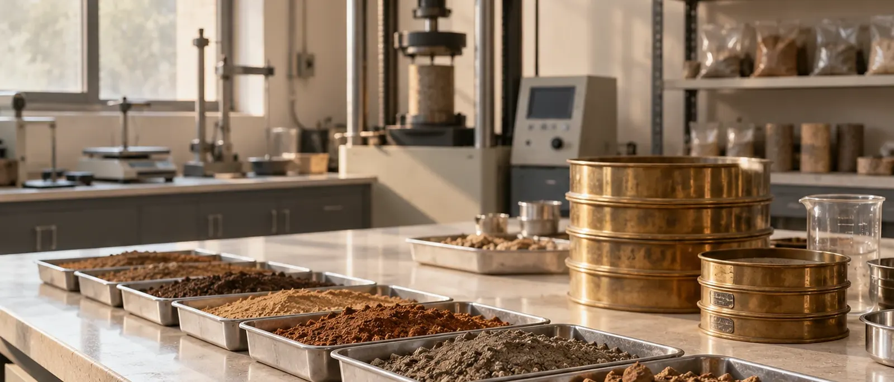

Understanding Soil Laboratory Test Results
Index properties, strength and consolidation: how to read the numbers in a soil laboratory report, and what they mean for the foundation above.
By the PETALS engineering team
Technically reviewed by [Reviewer name]

Why the lab report matters
The borehole log tells you what the ground is called. The laboratory tells you how it will behave: how strong it is, how much it will settle, whether it will swell when wet. Those numbers drive the foundation type, its depth and its size.
A lab report can run to dozens of pages of tables. Most of the numbers fall into three families: index properties that classify the soil, strength parameters, and compressibility. Read them in that order.
Index properties
Index tests are simple and cheap, and every sample should have them. They tell you what kind of soil you are dealing with.
| Test | Result | What it tells you |
|---|---|---|
| Grain size analysis | % gravel, sand, silt, clay | Coarse or fine grained; drainage behaviour |
| Atterberg limits | Liquid limit (LL), plastic limit, plasticity index (PI) | Type and plasticity of fine soils |
| Natural moisture content | % water by dry weight | Compared with the limits: how soft the soil is in place |
| Bulk and dry density | kN/m³ or g/cc | Overburden pressure, compaction state |
| Specific gravity | Typically 2.6 to 2.8 | Input to void ratio and saturation |
Reading the plasticity chart
Fine-grained soils are classified by plotting liquid limit against plasticity index. Points above the A-line are clays; points below it are silts. The liquid limit sets the plasticity: low below 35, intermediate from 35 to 50, high above 50.
LL 28 and PI 12 plot above the A-line and below LL 35: CL, clay of low plasticity. Usually workable and moderately compressible.LL 42 and PI 20 plot above the A-line between LL 35 and 50: CI, clay of intermediate plasticity. Check swell and consolidation if foundations are shallow.LL 64 and PI 38 plot above the A-line beyond LL 50: CH, clay of high plasticity. Expect high swell and shrinkage potential; black cotton soils often fall here.LL 46 and PI 10 plot below the A-line: MI, silt of intermediate compressibility. Same liquid limit range as S2, very different behaviour.
Strength
Shear strength is reported as cohesion (c) and angle of shearing resistance (φ). How it was measured matters as much as the value:
Unconfined compression gives a quick undrained strength for clays. Direct shear suits sands and gives c and φ on a fixed plane. Triaxial tests control drainage and confining pressure; unconsolidated undrained (UU) results apply to short-term loading, consolidated drained or undrained results with pore pressure to long-term behaviour.
A strength value without its test type and drainage condition is not a design parameter.
Compressibility and swell
For clays, settlement often governs design rather than strength. The consolidation test gives the compression index (Cc), which sets how much the clay will settle, and the coefficient of consolidation (cv), which sets how fast. Preconsolidation pressure tells you whether the clay has been loaded more heavily in the past.
Expansive soils such as black cotton soil need their own tests: free swell index and swelling pressure. A high swell result changes the foundation approach, often to under-reamed piles or founding below the active zone.
Checking a lab report
Use this list to check a laboratory report you have received.
Lab report checklist
0 of 6
Key takeaways
- Read the report in order: classification, strength, compressibility.
- The plasticity chart separates clays from silts; the liquid limit sets their plasticity.
- Strength values mean little without the test type and drainage condition.
- For clays, settlement and swell often govern the foundation.